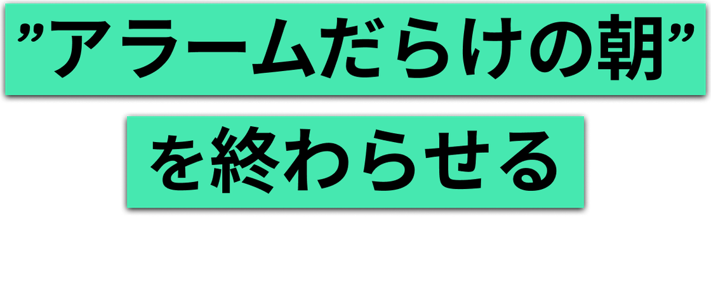
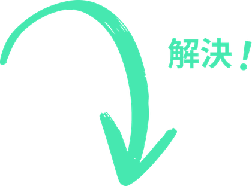
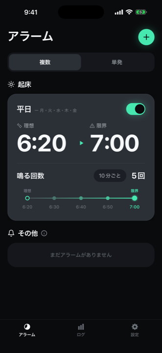
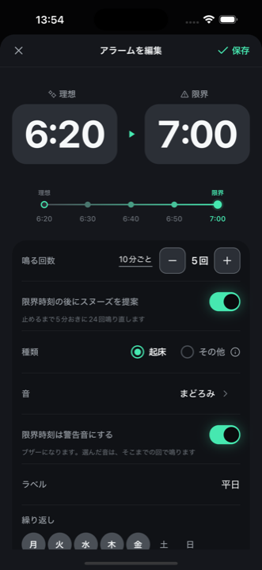
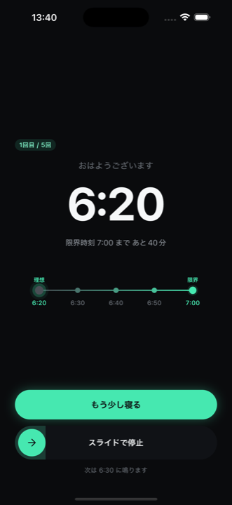
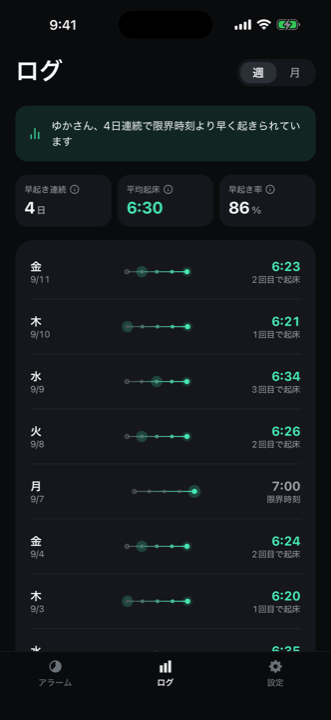
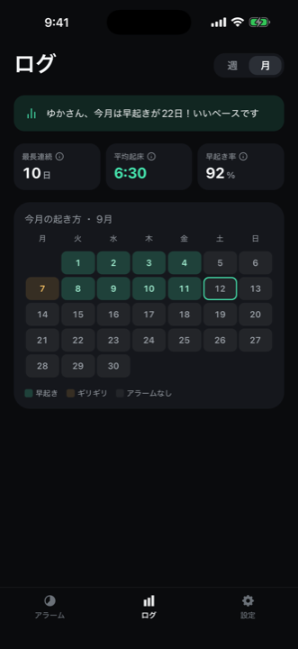
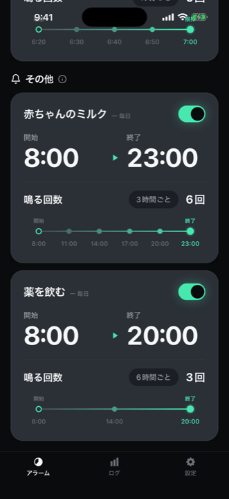

1タップで複数アラームを設定・解除

起きたい時刻と、絶対に起きなければいけない時刻。
その2つを決めるだけで、あいだのアラームは Sleep Slope が並べます。
そして起きた瞬間に、残りは全部消えます。
iPhone・iOS 16.4 以上 ／ 無料（App内課金あり）
純正の時計アプリ


なくなるもの
毎晩オン、毎朝オフ。
あの作業が、まるごと消える。
純正の時計アプリは「6時に起きたいけれど、7時までには絶対」という幅を持てません。だから10分刻みで並べることになります。
これまで
5件のアラームを、手で作る
早く起きられた朝ほど、消し忘れたアラームが残ります。6時に起きたのに、6時20分、6時40分、7時と鳴り続ける。うまくいった朝ほどうんざりする、あの理不尽。
Sleep Slope
アラームは、1件だけ
理想と限界を決めれば、あいだは自動で埋まります。夜に足す手間も、朝に消す手間もありません。
できること
決めるのは2つだけ。
あとは、朝の自分に任せる。
必要なぶんだけ鳴って、起きたら止まる。それ以上のことはしません。
理想と限界の、2つだけ
起きたい時刻と、絶対に起きなければいけない時刻。その2つを決めれば、あいだのアラームは Sleep Slope が用意します。1件ずつ足す作業は必要ありません。
鳴る回数も間隔も、好きなだけ
3回でも10回でも。5分おきでも20分おきでも。無料のまま、回数・間隔・限界時刻に上限はありません。曜日ごとの繰り返しも設定できます。
起きた瞬間、残りは全部消える
アラームを止めたあとの「起きた」のひと押しで、その日の残りが全て止まります。設定画面を開いて一つずつ消す必要はありません。
消音スイッチも、集中モードも貫く
iOS 26 以降では OS のアラーム機能で鳴ります。消音スイッチをオンにしていても、おやすみモード中でも鳴り、ロック画面からそのまま止められます。
限界時刻だけ、強い音に
普段は穏やかな音で。限界時刻を過ぎたら、はっきり起こしにいく音に切り替えられます。アラームごとに選べて、無料です。
何回目で起きたかが、残る
起きた時刻と、限界時刻までどれだけ余裕があったかを自動で記録します。振り返るために何かを操作する必要はありません。
使う流れ
夜に1件つくって、
朝は止めるだけ。

1. 幅を決める
理想と限界、鳴る回数。ここだけ決めれば、あいだの時刻は自動で並びます。

2. 残りが見える
いま何回目で、限界まであと何分か。わかったうえで「もう少し寝る」を選べます。

3. 記録が残る
何回目の何時に起きたか。操作しなくても、そのまま残ります。

ログ
一ヶ月の起き方が、
そのまま残る。
限界時刻までどれだけ余裕があったかを、日ごとに記録します。自分の朝が良くなっているのか、崩れてきているのかが見られます。
- 何回目のアラームで起きたか
- 限界時刻より早く起きられた日の連続
- 記録は端末の中だけ。外部に送信しません

起きるため以外にも
一日に何度も、
知らせてほしいことに。
薬を飲む、ミルクをあげる、水分をとる、姿勢を直す。開始と終了を決めれば、そのあいだを等間隔で鳴らします。同じ仕組みが、そのまま使えます。
- 8:00 から 23:00 まで、3時間ごとに6回
- 曜日ごとの繰り返しも設定できる
- 起床のアラームとは分けて並ぶ
Sleep Slope Pro
無料のままでも、
何度でも鳴ります。
回数も間隔も限界時刻も、無料で上限はありません。Pro は基本を解くためのものではなく、増やすためのものです。
Pro は自動更新サブスクリプションです。料金と期間、無料お試しの有無は、アプリ内の購入画面に表示されます。解約は 設定 ＞ ご自身の名前 ＞ サブスクリプション からいつでも行えます。
よくある質問
気になるところ
消音にしていても鳴りますか
iOS 26 以降では、Sleep Slope のアラームは OS のアラーム機能で鳴ります。消音スイッチをオンにしていても、おやすみモード中でも鳴り、ロック画面からそのまま止めたりスヌーズにできます。iOS 26 より前では通知として鳴るため、消音スイッチや集中モードの設定に従い、通知音は数十秒で停止します。
限界時刻に起きられなかったら
限界時刻を過ぎると、止めるまで5分おきに鳴り直します。一発に賭けない、というのはそういうことです。
Apple Watch でも鳴りますか
鳴ります。Watch 用のアプリを入れる必要はなく、アプリ側の設定もありません。鳴る時刻に Watch が iPhone とつながっていれば、手首で気づいて、そのまま止められます。
記録は外部に送られますか
アカウント登録はありません。起床の記録と設定は端末内にのみ保存され、外部のサーバーには送信していません。詳しくはプライバシーポリシーをご覧ください。
機種変更したら記録は移せますか
記録は端末内にのみ保存しているため、端末をまたいだ引き継ぎには対応していません。端末のバックアップ（iCloud など）を有効にしている場合は、そのバックアップに含まれます。
うまく鳴らないときは
サポートページに、鳴らないときの確認項目と問い合わせ先をまとめています。
明日の朝から、
アラームは1件でいい。
iPhone・iOS 16.4 以上 ／ 無料（App内課金あり）